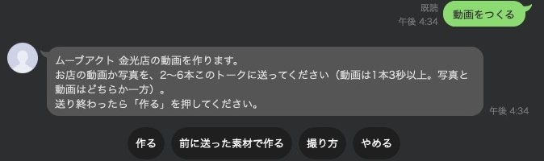
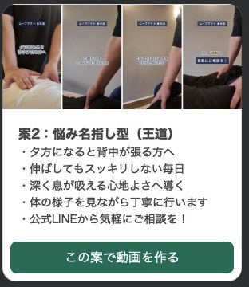
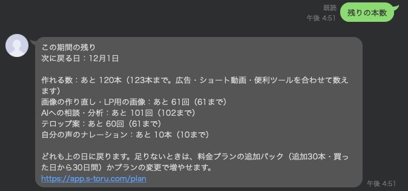

マカセルの使い方
マカセルで「しっとるが進めること」と「ご自身で進めること」を、この1ページにまとめました。迷ったときは、まずここをご覧ください。ほとんどの操作は、公式LINE「マカセル通知」のボタンで済みます。
お申し込みと権限の渡し方はご利用ガイドをご覧ください。
2毎月の流れ（しっとるが進める分）
毎月、お支払いの日の3日前から、次の順に公式LINEに届きます。届いたらボタンを押すだけで進みます。
- お支払いの日の3日前：「今月の動画の希望」が届く先月と同じでよければボタンを1回押すだけです（4章）。
- 構成案が3つ届く見比べて「この案にする」を押します。合わなければ「直してほしい」。
- 動画と投稿の本文が届く動画と、Instagramに載せる本文（お店の住所・アクセスなど入り）を確かめて「この動画にする」を押します。
- Instagramに投稿押してから5分後に投稿します。その間は「取り消す」で止められます。
- 広告の条件が届く投稿のURL・予算・リンク先・配信エリア（どこを中心に半径何km）・ターゲットを確かめて「この条件で広告を始めてOK」を押します。
- しっとるが広告を始めるOKをいただいたら、すぐに広告を始めて「広告を始めました」をお送りします。広告アカウントでは「【マカセル】」から始まる名前の広告が、しっとるが運用している広告です。
- 審査の結果のお知らせMetaの審査で承認されたら「承認されました」をお送りします。ここから順に表示が始まります。審査で一部直すように言われたときは、こちらで直してからあらためてお知らせします。
- 毎週月曜の朝：レポートと改善案広告ごとの数字と、次にやることが届きます（9章）。
- 次の広告の3日前：条件のお伺い「前回と同じでOK」か「一部を変える」を選びます（6章）。
- 30日間が終わった翌朝：まとめ30日間の数字と、良かった点・次に変える点が届きます。
4毎月の「動画の希望」に答える
お支払いの日の3日前（日本時間の10時〜20時）に、お店ごとに「今月の動画の希望」が届きます。しっとるが作る動画は、この内容に沿って作ります。
| 聞くこと | 答え方 |
|---|---|
| 宣伝したいこと | 文字で送る（「おまかせ」も選べます） |
| 見てほしいお客様 | 文字で送る（「おまかせ」も選べます） |
| 見せたい場面 | いくつでも選べます |
| 雰囲気 | いくつでも選べます |
| 参考の動画・広告 | URLを送るか「なし」 |
| 使わない言葉など | 映してほしくないもの・使ってほしくない言葉を送るか「特になし」 |
- 先月と同じでよいとき：「先月と同じでOK」を押すだけです。
- 一部だけ変えたいとき：「一部を変える」から、変えたい項目だけ選んで書き直します。ほかの項目はそのまま残ります。
- 押し間違えたとき：「1つ戻る」で前の質問に戻れます。
- 月の途中で変えたいとき：トークに動画の希望と送ると、今の内容が出ます。
5構成案・動画・投稿の本文・広告の条件を確かめる
構成案（文字と場面の順番）
- 構成案が3つ、下見の画像つきで届きます。横に動かして見比べます。
- 作りたい案の「この案にする」を押します。
- 合わないときは「直してほしい」を押して、直したい所をそのまま送ります（例：「2行目をもっとやさしい言い方に」）。その内容で作り直してお送りします。
動画と投稿の本文
- 動画と、Instagramに載せる本文が一緒に届きます。本文には、お店の住所・アクセス・営業時間など、お店の情報が入ります。動画の店名の下には、エリアと最寄り駅から何分か（例：「浅口市 / 金光駅から徒歩6分」）が入ります。
- よければ「この動画にする」を押します。押してから5分後にInstagramに投稿します。
- 直したいときは「直してほしい」を押して、直したい所をそのまま送ります。
- 文字（テロップ）を直したい：例「1行目を『初診はカウンセリング＋検査＋施術で60分』に」。言葉はそのまま使います。
- 映像を替えたい：場面ごとの写真に番号が付いて届くので、替えたい場面の番号を押します。選んだ映像は、そのお店では二度と使いません。
- 本文だけ直したい：例「本文に駐車場ありを足して」。動画はそのままで、本文だけ直してお送りします。
広告の条件
投稿のあと、次の条件が届きます。
【リンク先】予約ページのURL
【配信エリア】店舗から半径 ○キロ圏内
【ターゲット】○~○歳 男性・女性
よければ「この条件で広告を始めてOK」を押してください。すぐに広告を始めます。直したい所があれば「直してほしい」から送ってください。
広告の決まりのお知らせ
治療院・整骨院などの広告の決まりに当たる言葉は、テロップや本文には使いません。リンク先のページに当たりそうな言葉があるときは、お知らせが一緒に届きます。ご確認いただいてから進めます。
6次の広告の条件のお伺い・30日間のまとめ
広告は30日間ずつ回します。30日間は、始めた日を1日目として数えます（例：11月3日に始めたら12月2日まで）。次の広告は、今の広告が終わった翌日から始まります。
- 次の広告の開始日の3日前：次の広告の条件（予算・リンク先・配信エリア・ターゲット・開始日と終了日・使う投稿）が届きます。
- 前回と同じでよいとき：「前回と同じでOK」を押すだけです。
- 一部だけ変えたいとき：「一部を変える」から、予算・リンク先・配信エリア・ターゲットのうち変えたいものだけ選んで答えます。変えた後の条件を見て「この条件でOK」を押します。
- 開始日：OKをいただいた条件で、しっとるが広告を始めます。
30日間のまとめ
広告が終わった翌朝に、その30日間の数字（使った広告費・表示回数・届いた人数・クリック数・クリック率・1クリックあたり）と、良かった点・次に変える点が届きます。
7お店の動画・写真を送る
撮れたものから、公式LINEのトークにそのまま送ってください。お店の素材として保存され、構成案や動画づくりに使います。
- スマホを縦向きに、1本10秒ほど（3秒より短いと使えません）
- カメラは動かさずに、なるべく固定して撮る（大きく振ると、動画が急に動いて見えます）
- 長い動画は、10〜15秒ほどに分けて送ると確実です
- LINEで送るときは「オリジナル画質」で
- 施術や接客の様子、お店の入口や中、スタッフなどがあると作りやすくなります
- 人が写るときは、写る方の了解をお取りください
何を撮ればよいか迷ったら、メニューの「撮り方」を押してください。
8ご自身で進めるとき（追加の動画・投稿・広告）
しっとるが進める月の分とは別に、ご自身でも作れます。ご自身で進めるときは、次の手順どおりに進めていただければ大丈夫です。担当への確認はいりません。
こんなときは、こうする
| やりたいこと | 進め方 |
|---|---|
| 別の切り口の動画をもう1本作りたい | 「動画をつくる」→ 下の手順 |
| 写真で広告の案を作りたい | 「広告をつくる」→ 画像・複数枚を選ぶ |
| 作った動画をInstagramに載せたい | 動画が届いたカードの「Instagramに投稿する」 |
| 作った動画で広告も出したい | 投稿したあと、届いたカードの「広告にする」→ 条件を選んで「この条件で広告を始めてOK」 |
| 作った動画に音楽を入れたい・変えたい | 動画が届いたカードの「音楽を変える」→ 曲の雰囲気を選ぶ |
| キャッチコピーの案がほしい | 「キャッチコピー」→ テーマを一言送る |
| この言葉を広告に使ってよいか知りたい | 「規約チェック」→ 文を貼って送る |
| あと何本作れるか知りたい | 「残りの本数」 |
動画をつくる
- 「動画をつくる」を押し、お店を選びます。
- お店の動画か写真を2〜6本送り、「作る」を押します（前に送った素材で作ることもできます）。
- テロップ案が3つ届きます（1分ほど）。作りたい案の「この案で動画を作る」を押します。
- 2〜3分で動画が届きます。「承認して素材を受け取る」「Instagramに投稿する」「別の案で作る」から選びます。
- 音楽を入れたい・変えたいときは「音楽を変える」を押し、「なし」「落ち着いた」「やさしい」「明るい」「すっきり」から選びます。同じ映像・同じ文字のまま、音楽だけ替えてお送りします。動画が届いてから1時間以内なら、トークに「明るい曲を入れて」のように送っても大丈夫です。
広告をつくる
「広告をつくる」を押してお店を選び、画像・複数枚・動画のどれで作るかを選びます。
ご自身で出す広告について
- ご自身で出す広告の広告費は、しっとるが運用する月の分とは別にかかります。
- 広告の名前は「【マカセル】」から始まります。ご自身で広告マネージャから出している広告とは別に動きます。
- 毎週のレポートと改善案は、ご自身で出した広告の分も一緒に届きます。
キャッチコピー・規約チェック
- キャッチコピー：テーマを一言送ると（例：「産後の骨盤」「肩こりの会社員向け」）、10案届きます。
- 規約チェック：見出し・本文・テロップなどの文を貼って送ると、使えない言葉がないか確かめます。
9毎週のレポートと改善案・予約の数え方
- 毎週月曜の朝：直近7日の数字と、次にやること（改善案）が届きます。しっとるが運用している「【マカセル】」の広告は広告ごとに、ご自身で出している広告は合計で分けて書きます。
- 改善案：「続ける」「替える」「止める」「予算を変える」の判定ごとに、理由と次の一手（替えるときは何をどう替えるか・撮るもの）を書きます。
- 入れ替え：見飽きられ始めた広告には、新しい動画をお送りします。「この動画に入れ替える」を押すと、しっとるが入れ替えます。広告費の設定は変わりません。
- メニューの「成果レポート」でも、いつでも見られます。
広告から来られた予約の数え方
広告から何件ご予約があったかは、広告のリンク先によって、マカセルで自動で数えられないことがあります。そのため、広告を始めたときと、30日間のまとめで予約の数が分からなかったときに、リンク先に合った数え方のご提案を公式LINEでお送りします（同じご提案は30日に1回まで）。
| リンク先 | 数え方 |
|---|---|
| ホットペッパーなど他社の予約ページ | 他社のページには計測のしかけを入れられないため、自動では数えられません。次の方法をおすすめします。 ・広告専用のクーポン（例「Instagramを見た方限定」）を作る：そのクーポンの予約数が、広告からの予約数になります ・来店時のカウンセリング（問診票）で「何を見てご予約いただきましたか？（Instagramの広告／Instagramの投稿／ホットペッパー／ご紹介／その他）」と聞く：問診票に足す1行の文例もお送りします ・毎週月曜のレポートのボタンで、来られた人数を教えていただく ・しっとるのLP制作（下） |
| お店のホームページ | お店ごとの計測のしかけ（1行）と、貼り方（WordPress・Wix・Jimdo・ペライチ・STUDIOなど作りごと）を公式LINEでお送りします。貼るのはお店側（またはホームページの制作会社）でお願いします。予約が済んだときに出るページのURLもトークで教えてください。貼ったあとに「確かめる」を押すと、うまく届いているかを自動で確かめます |
| 公式LINE | 公式LINE構築のオプションで、LINEからの予約・お問い合わせを数えられます |
| お電話だけ・分からない | 毎週のレポートのボタンで人数を教えていただくか、LP制作 |
- 毎週のレポートのボタン：予約の数が自動で取れないお店には、毎週月曜のレポートに「先週、広告から来られた方は何人でしたか？」（0・1・2・3人以上・わからない）のボタンが付きます。教えていただいた人数から、予約1件あたりの広告費をレポートと30日間のまとめにお出しします。
- しっとるのLP制作：計測のしかけを入れた状態でLP（予約ページへの入口のページ）をお作りします。LPを広告の行き先にすると、ボタンが押された数・予約が済んだ数まで自動で数えられ、広告も予約しそうな方に届きやすくなります。月額14,300円（税込・1ページ・初期費用0円・公開後の修正は月3回まで無料・12か月契約）。
- ご提案のカードの「話を聞きたい」を押すと、担当からご連絡します。押しただけでお申し込みになることはありません。
10作れる数（クレジット）でできること・少なく済ませるコツ・残りの見方
| ライト | プロ | ビジネス | |
|---|---|---|---|
| しっとるが進める動画（月） | 1本 | 3本 | 5本 |
| ご自身で作れる数（月） | 60 | 120 | 200 |
1回で使う数
| やること | 使う数 |
|---|---|
| ショート動画を1本作る（作り直しも1本） | 1 |
| 広告の案を作る（画像・複数枚・動画） | 1 |
| キャッチコピー・規約チェックなどの便利ツール | 1 |
| テロップ案・画像の作り直し・AIへの相談・自分の声のナレーション | 別の枠で数えます（ご自身で作れる数は減りません。それぞれに上限があります） |
| ご自身で作った動画の音楽だけを替える | 0 |
| しっとるが進める月の分・自動の作り直し | 0 |
ライト（60）でできることの例
- 別の切り口の動画を毎週2本ずつ作る（約8〜10）＋気に入らなかった分を作り直す（約10）＋写真の広告の案を週1回（約4〜5）＋キャッチコピー・規約チェック（約10）
- それでも30ほど残ります。
本数を少なく済ませるコツ
- 毎月の「動画の希望」をくわしく書く：しっとるが進める月の分は本数を使いません。宣伝したいこと・見せたい場面をくわしく書くほど、ご自身で作り足す回数が減ります。
- 文字はテロップ案の段階で決める：テロップ案は別の枠で数えるので、本数は減りません。3つの案を見比べて、文字に納得してから「この案で動画を作る」を1回だけ押してください。動画を作ってから文字を直すと、そのたびに1本使います。
- 素材を先にそろえて送る：縦向き・カメラ固定・1本10秒ほどで、見せたい場面ごとに撮って送っておくと、映像が合わずに作り直すことが減ります。
- 直すときは1回でまとめて伝える：「2行目を〇〇に、3つ目の場面の映像を替えて」のように、直したい所を全部まとめて1通で送ると、1回の作り直しで済みます。少しずつ何回も直すと、その回数だけ使います。
- 「別の案で作る」の前に、届いたテロップ案から選び直す：同じ素材で切り口を変えたいときは、まず届いている3つのテロップ案の中から別の案を選んでください。
- キャッチコピー・規約チェックはまとめて1回で：キャッチコピーは1回で10案届きます。規約チェックは、確かめたい文をまとめて貼って1回で送ってください。
参考例：本数を少なく済ませる進め方（実際の画面）
ムーブアクト金光店で、動画を1本作ったときの実際の画面です。この進め方なら、動画1本につき使うのは1本だけです。
- 素材を先に送っておく
施術の手元など、見せたい場面を縦向き・カメラ固定で撮り、トークに送っておきます（この例では4本）。
- 「動画をつくる」と送り、「作る」を押す
前に送った素材が残っていれば、「前に送った素材で作る」でそのまま使えます。新しく撮った素材があれば、ここで送ってから「作る」を押します。

「動画をつくる」を送ったところ - テロップ案が3つ届く（ここでは本数を使いません）
横に動かして3つの案を見比べ、文字に納得できる案を選びます。合わなければ「案を作り直す」で別の3案を出せます（テロップ案の枠で数えるので、作れる数は減りません）。

テロップ案のカード（3つのうちの1つ） - 「この案で動画を作る」を1回だけ押す（ここで1本使います）
2〜3分で動画が届きます。よければ「承認して素材を受け取る」か「Instagramに投稿する」を押します。

動画が届いたところ - 残りを確かめる
「残りの本数」と送ると、作れる数が1本だけ減っていることが分かります（テロップ案は別の枠で数えます）。

「残りの本数」の返事（この例はプロプランの画面です）
残りの見方
メニューの「残りの本数」か、トークに残りの本数と送ると、残り・今月使った内訳・次に戻る日が届きます。残りが2割を切ったときも、1回お知らせします。作る前のボタンでも「残り○本から1本使います」と出ます。
本数はお支払いの日ごとに元に戻ります。使い切ったときは、追加パック（30本・買った日から30日間）か、上のプランへの変更をお選びいただけます。
11押し間違えたとき
| 押したボタン | 取り消し方 |
|---|---|
| この案にする（構成案） | 返事に出る「取り消す」（30分）。動画を作り始める前なら選び直せます |
| この動画にする | 返事に出る「取り消す」（投稿までの5分）。投稿されたあとは担当にお知らせください |
| この条件で広告を始めてOK | 返事に出る「取り消す」（30分）。広告を止めて消し、条件を選び直せます |
| 直してほしい | 「やっぱりこのままでいい」で元に戻せます（直したい所をまだ送っていないとき） |
| 先月と同じでOK／前回と同じでOK | 返事に出る「取り消す」（30分） |
| 動画の希望の答え | 「1つ戻る」 |
12アプリの画面でできること
メニューの「店舗の設定」「使い方」や、トークに届くリンクから、マカセルの画面が開きます。
| 画面 | できること |
|---|---|
| 商材・店舗 | お店の地域・予算・Instagramなどを見る・変える |
| 設定・連携 | 公式LINEをつなぐ人を足す・外す、契約内容を見る（印刷・PDFで保存） |
| 料金プラン | プランの変更・追加パック・解約（カードの入力は画面で行います） |
13社内の複数の方で受け取る
確認のお願い・構成案・レポートを、ほかの方のLINEにも届けられます。1人ずつ、次の順でつなぎます。
- つなぎたい方が、スマホで公式LINE「マカセル通知」を友だち追加します。
公式LINEを友だち追加 - マカセルの画面の「設定・連携」で「別のLINEをつなぐ（6桁のコードを出す）」を押します。
- 出た6桁の数字を、つなぎたい方が公式LINEのトークにそのまま送ります（10分以内）。
| プラン | つなげる人数 |
|---|---|
| ライト | 1人 |
| プロ | 3人まで |
| ビジネス | 何人でも |
外すときは「設定・連携」の「外す」から外せます。
14よくある質問
「動画の希望」に答えないと、どうなりますか？
前に答えていただいた内容のまま進めます。変えたいときは、いつでもトークに「動画の希望」と送ってください。
構成案がどれも合いません。
「直してほしい」を押して、直したい所をそのまま文字で送ってください。その内容で作り直してお送りします。
動画の映像を替えてほしいです。
「直してほしい」を押すと、場面ごとの写真に番号が付いて届きます。替えたい場面の番号をすべて押してください。選んだ映像は、そのお店では二度と使いません。
投稿の本文を変えたいです。
投稿の前なら、動画のカードの「直してほしい」から本文の直したい所を送ってください。投稿したあとの本文は、Instagramのアプリの「編集」からご自身で直せます。
勝手にInstagramに投稿されたり、広告が出たりしませんか？
しません。広告やInstagramへの投稿は、お客様が公式LINEや画面で承認したものだけです。ふだんの投稿やメッセージを、しっとるが変えることはありません。
自分で出している広告と、しっとるの広告の見分け方は？
しっとるが運用している広告は、名前が「【マカセル】」から始まります。ご自身で出している広告には触れません。
広告を止めたい・予算を変えたいときは？
次の広告の条件のお伺い（開始日の3日前）で「一部を変える」から変えられます。途中で止めたい・変えたいときは、トークにそのまま書いて送ってください。担当が対応します。
広告から何件予約が来たか分かりますか？
リンク先によります。ホットペッパーなど他社の予約ページは自動では数えられないため、広告専用のクーポンや、来店時のカウンセリングで「何を見てご予約いただきましたか？」と聞く方法をおすすめしています。くわしくは9章の「予約の数え方」をご覧ください。
顔を出したくない・映してほしくないものがあります。
「動画の希望」の「使わない言葉など」に書いてください。その内容を外して作ります。
動画を送ったのに保存されません。
長い動画は保存できないことがあります。1本10〜15秒ほどに分けて送ってください。
しっとるが作る数と、自分で作れる数は別ですか？
別です。しっとるが進める月の分や自動の作り直しは、ご自身で作れる数からは引きません。
本数を使い切ったらどうなりますか？
次のお支払いの日に元に戻ります。その前に必要なときは、追加パック（30本・買った日から30日間）か、上のプランへの変更をお選びいただけます。
お店が複数あります。
動画の希望と構成案は、お店ごとに届きます。ご自身で作るときは、最初にお店を選びます。
レポートの見方が分かりません。
判定は「続ける」「替える」「止める」です。次にやることは改善案に書いてあります。分からないところは、レポートの画面の写真をトークに送ってください。
プランを変えたい・解約したいときは？
マカセルの画面の「料金プラン」から変更・解約ができます。解約すると次回からのお支払いが止まり、お支払い済みの期間の終わりまでお使いいただけます。
問い合わせはどこにすればよいですか？
公式LINEのトークに、そのまま文字や画面の写真を送ってください（お電話ではお受けしていません）。担当者の対応は、当社の営業日・営業時間内に行います。